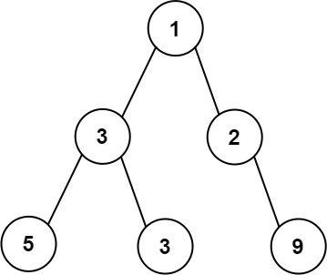
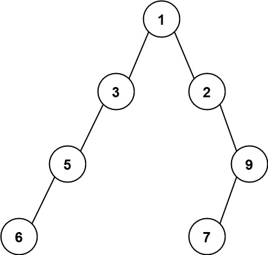

662. 二叉树最大宽度
| 题目信息 | 内容 |
|---|---|
| 难度 | 中等 |
| 核心模式 | BFS 逐层 + 完全二叉树下标编号 |
| 时间复杂度 | O(n) |
| 空间复杂度 | O(n) |
题目与约束
给你一棵二叉树的根节点 root ，返回树的 最大宽度 。
树的 最大宽度 是所有层中最大的 宽度 。
每一层的 宽度 被定义为该层最左和最右的非空节点（即，两个端点）之间的长度。将这个二叉树视作与满二叉树结构相同，两端点间会出现一些延伸到这一层的 null 节点，这些 null 节点也计入长度。
题目数据保证答案将会在 32 位 带符号整数范围内。
示例 1：

<strong>输入：</strong>root = [1,3,2,5,3,null,9]
<strong>输出：</strong>4
<strong>解释：</strong>最大宽度出现在树的第 3 层，宽度为 4 (5,3,null,9) 。
示例 2：

<strong>输入：</strong>root = [1,3,2,5,null,null,9,6,null,7]
<strong>输出：</strong>7
<strong>解释：</strong>最大宽度出现在树的第 4 层，宽度为 7 (6,null,null,null,null,null,7) 。
示例 3：

<strong>输入：</strong>root = [1,3,2,5]
<strong>输出：</strong>2
<strong>解释：</strong>最大宽度出现在树的第 2 层，宽度为 2 (3,2) 。
提示：
-
树中节点的数目范围是
[1, 3000] -
-100 <= Node.val <= 100
核心不变量
把每个节点按完全二叉树规则编号（根为 0，左孩子
2*i，右孩子2*i+1），则某一层的宽度恰为「最右编号 − 最左编号 + 1」，中间的null会自动被计入。
完整推导
思路推导
-
痛点：不能只数节点个数。题目明确要求把中间的
null也计入长度。比如第 3 层只有5,3,9三个真实节点，但它们在满二叉树中的位置跨度是 4，所以答案是 4 而不是 3。因此我们需要一种能体现「位置」的度量。 -
用完全二叉树编号度量位置。给每个节点编一个下标：根记为
0，对下标为i的节点，左孩子记2*i，右孩子记2*i+1。这正是堆/满二叉树的下标规律。某一层最左节点编号为L、最右为R，则该层宽度就是R - L + 1，中间所有被跳过的编号（对应null位置）自然被算进去。 -
逐层 BFS 取左右端点。用 BFS 按层处理，队列里同时存
(节点, 编号)。每层开始时记录队首编号作为L，把这一层size个节点依次弹出，最后一个弹出的编号就是R，R - L + 1更新答案。 -
防溢出：每层归一化。编号会随深度呈指数增长（
2^depth），深度较大时 64 位整数都存不下。技巧是每一层都用该层最左编号做基准，把子节点编号按(idx - L) * 2、(idx - L) * 2 + 1计算。这样编号始终只与「本层宽度」同阶，规模被压在 O(n)，不会溢出。
小例子：root = [1,3,2,5,3,null,9]，第 3 层编号为 4,5,7（3 的左/右孩子 4,5，2 的右孩子 9 落在编号 7），宽度 7 - 4 + 1 = 4 ✓。
Java 实现（BFS + 下标编号）
import java.util.ArrayDeque;
import java.util.Deque;
/**
* Definition for a binary tree node.
* public class TreeNode {
* int val;
* TreeNode left;
* TreeNode right;
* TreeNode() {}
* TreeNode(int val) { this.val = val; }
* TreeNode(int val, TreeNode left, TreeNode right) {
* this.val = val;
* this.left = left;
* this.right = right;
* }
* }
*/
class Solution {
public int widthOfBinaryTree(TreeNode root) {
if (root == null) {
return 0;
}
int maxWidth = 0;
// 用两个队列同步保存节点与其在「当前层坐标系」下的编号
Deque<TreeNode> nodes = new ArrayDeque<>();
Deque<Long> idxs = new ArrayDeque<>();
nodes.offerLast(root);
idxs.offerLast(0L);
while (!nodes.isEmpty()) {
int size = nodes.size();
long left = idxs.peekFirst(); // 本层最左编号
long right = left; // 本层最右编号（逐次更新）
for (int i = 0; i < size; i++) {
TreeNode node = nodes.pollFirst();
long idx = idxs.pollFirst();
right = idx;
// 归一化：以本层 left 为基准，避免指数级溢出
if (node.left != null) {
nodes.offerLast(node.left);
idxs.offerLast((idx - left) * 2);
}
if (node.right != null) {
nodes.offerLast(node.right);
idxs.offerLast((idx - left) * 2 + 1);
}
}
maxWidth = Math.max(maxWidth, (int) (right - left + 1));
}
return maxWidth;
}
}
复杂度
- 时间：O(n)。每个节点入队、出队各一次，常数级操作。
- 空间：O(n)。BFS 队列最坏同时存放最宽一层的节点，规模线性。
易错点与扩展（面试高频考点）
- 把「节点个数」当宽度：若只统计每层实际节点数，示例 1 会得到 3，而正确是 4。必须用下标差来体现
null占位。 - 编号溢出：单链退化树深度可达 3000，
2^3000远超long。务必在每层做归一化，或使用大整数。 - 宽度的计算对象：
R - L + 1中的L/R是「同一层」的最左/最右编号，不要跨层混用。 - 空树：
root == null直接返回 0。 - 可扩展：如果只求某一层的宽度可直接定位该层；也可用 DFS（带
(node, level, idx)）递归记录每层最左编号后计算，时间复杂度同为 O(n)。
力扣原题
C++ 实现
#include <queue>
#include <algorithm>
using namespace std;
/**
* Definition for a binary tree node.
* struct TreeNode {
* int val;
* TreeNode *left;
* TreeNode *right;
* TreeNode() : val(0), left(nullptr), right(nullptr) {}
* TreeNode(int x) : val(x), left(nullptr), right(nullptr) {}
* TreeNode(int x, TreeNode *left, TreeNode *right) : val(x), left(left), right(right) {}
* };
*/
class Solution {
public:
int widthOfBinaryTree(TreeNode* root) {
if (!root) return 0;
int maxWidth = 0;
queue<pair<TreeNode*, long long>> q;
q.push({root, 0});
while (!q.empty()) {
int size = q.size();
long long left = q.front().second;
long long right = left;
for (int i = 0; i < size; ++i) {
auto [node, idx] = q.front();
q.pop();
right = idx;
// 归一化，防止编号指数级溢出
if (node->left) q.push({node->left, (idx - left) * 2});
if (node->right) q.push({node->right, (idx - left) * 2 + 1});
}
maxWidth = max(maxWidth, (int)(right - left + 1));
}
return maxWidth;
}
};
Python 实现
from collections import deque
# Definition for a binary tree node.
# class TreeNode:
# def __init__(self, val=0, left=None, right=None):
# self.val = val
# self.left = left
# self.right = right
class Solution:
def widthOfBinaryTree(self, root) -> int:
if not root:
return 0
max_width = 0
q = deque([(root, 0)])
while q:
size = len(q)
left = q[0][1]
right = left
for _ in range(size):
node, idx = q.popleft()
right = idx
# 归一化，防止编号指数级膨胀
if node.left:
q.append((node.left, (idx - left) * 2))
if node.right:
q.append((node.right, (idx - left) * 2 + 1))
max_width = max(max_width, right - left + 1)
return max_width